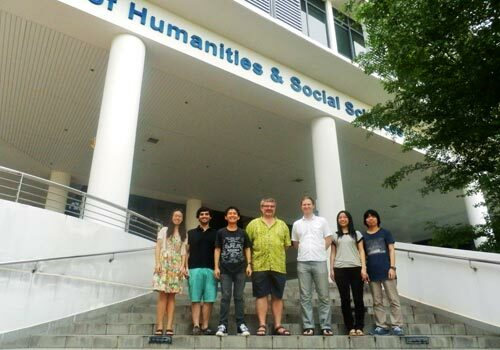

Computational Linguistics Lab
This page provides information about the Computational Linguistics Lab (CL Lab, 凡土研), based in the Department of Asian Studies and the Department of General Linguistics, Palacký University Olomouc.
The CL Lab aims to develop precise, linguistically-motivated, computationally-tractable representations of natural language. Currently our work focuses on integrating lexical semantic representations using wordnets with structural semantic relations from the HPSG framework. Although interested in all languages, we mainly deal with Mandarin Chinese, English, Japanese, Indonesian and Malay.
Because of the immense scope of our task, we work closely with several larger projects. The CL Lab is a member of the DELPH-IN (Deep Linguistic Processing with HPSG Initiative), a network of academic and commercial research institutions that target applications of precise, linguistic NLP. HPSG and Minimal Recursion Semantics (MRS) provide the common scientific framework for DELPH-IN members, and many of our resources are part of the DELPH-IN open-source repository. Currently, we maintain and develop grammars for Japanese and Chinese. We are also part of the Global Wordnet Association and maintain and develop the Open Multilingual Wordnet, the Japanese Wordnet, the Wordnet Bahasa, the Chinese Open Wordnet and the Myanmar Open Wordnet.
Finally, the CL Lab is a strong supporter of Open Data, Open Source and Open Science, and we try to make the fruits of our research both freely available and useful to others. In particular, we are continuously developing a richly annotated corpus: NTU Multilingual Corpus, with aligned data in eight languages (Arabic, Mandarin Chinese, English, Indonesian, Japanese, Korean, Thai, Vietnamese).
The official goal of bond-lab is to make everything perfect for everyone forever. This supersedes our old goal of knowing everything and putting it all together to see what it means.
Current Research

Computational Linguistics Lab (凡土研)
Francis Bond <bond@ieee.org>
Department of Asian Studies & Department of General Linguistics
Palacký University Olomouc · GitHub